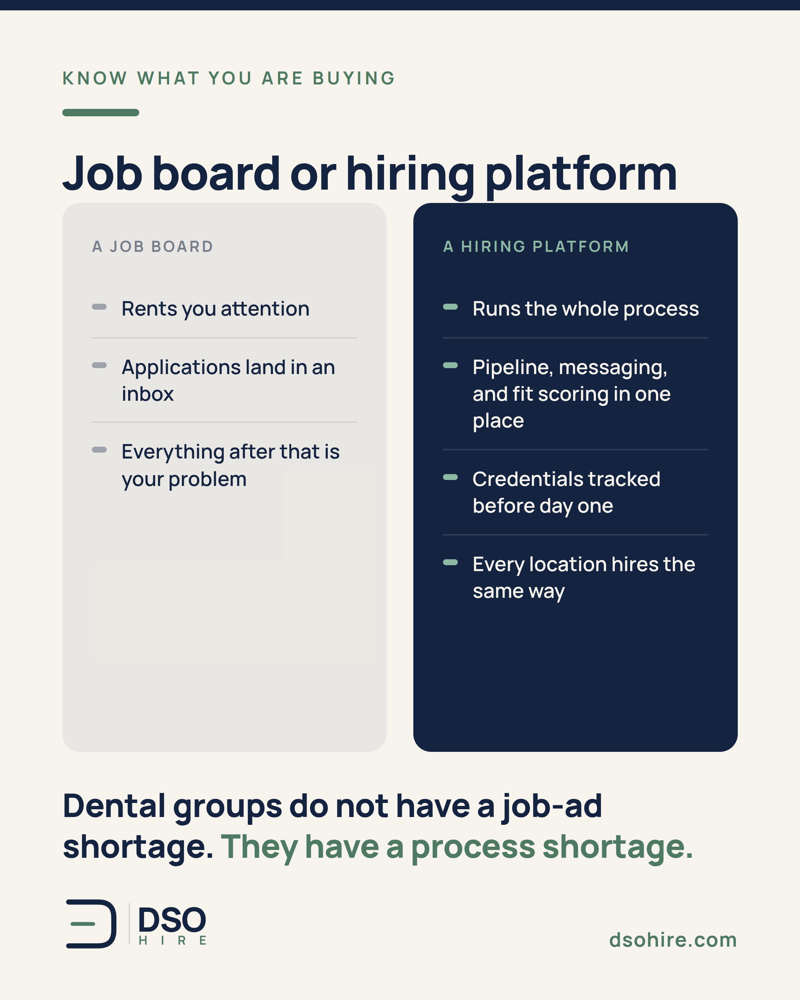
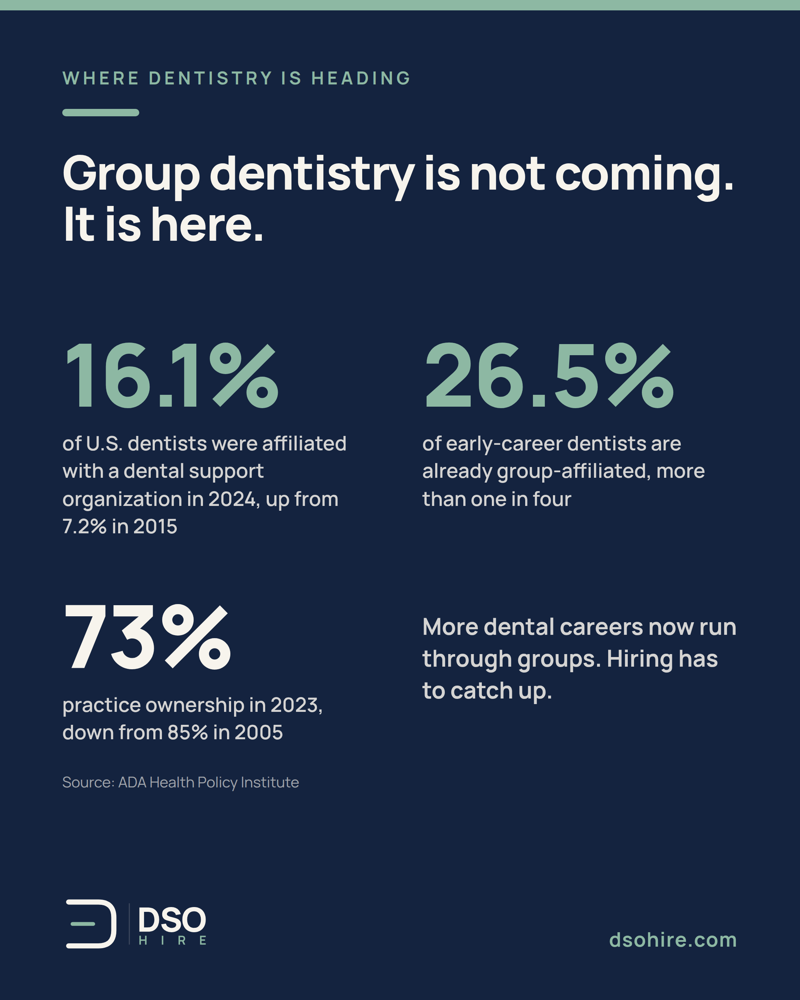
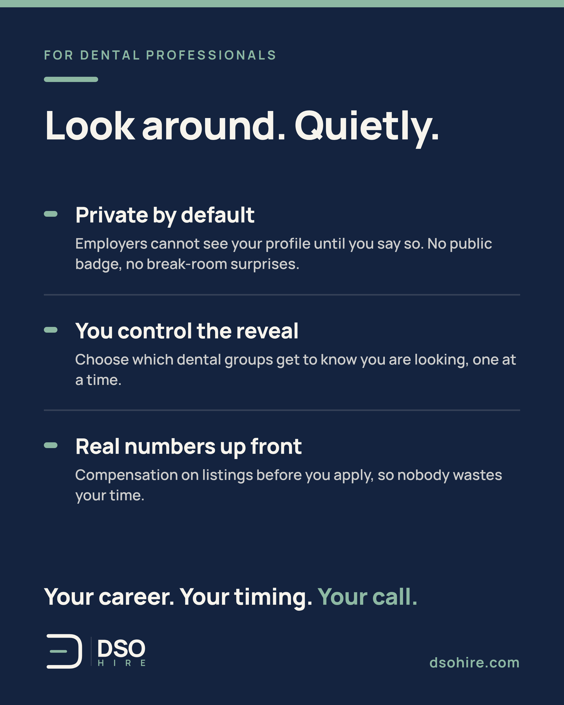

We made a rule while building DSO Hire: the software never rejects a candidate on its own.
No auto-knockouts. No silent filters that bin a resume before a human sees it.
Matching and screening tools exist in the product, and they're good. They rank, they surface, they summarize. But surfacing is where the software stops. A person, with context, makes every decision about a person.
Two reasons.
First, fairness. Automated rejection is where hiring tools quietly go wrong, and dental careers are too important for that.
Second, quality. The best hire in your group's history might be a career changer with a nonstandard resume. A keyword filter throws that person away. A hiring manager doesn't.
AI should make recruiters faster, not replace their judgment.
Where do you draw the line on automation in hiring?

"So it's a job board?"
I get this question a lot, and the distinction matters.
A job board rents you attention. You pay, your ad runs, applications land in an inbox, and everything after that is your problem.
A hiring platform runs the process. On DSO Hire, the listing is where things start, not end. A candidate pipeline with interview stages. Messaging in one place instead of scattered texts. Fit scoring that surfaces likely matches for a person to review. Credentials tracked before day one. Team seats so every location hires the same way.
Dental groups don't have a job-ad shortage. They have a process shortage.
How many different places does your group's hiring live right now?

Group dentistry isn't coming. It's here.
16.1 percent of U.S. dentists were affiliated with a dental support organization in 2024, up from 7.2 percent in 2015. Among dentists less than 10 years out of school it's 26.5 percent, more than one in four (ADA Health Policy Institute).
Practice ownership tells the same story: 73 percent of dentists owned their practice in 2023, down from 85 percent in 2005.
Whatever you think about consolidation, the operational reality is this: more dental careers now run through groups, and groups hire differently. Multiple locations, shared pipelines, centralized ops, distributed teams.
Most of the hiring tools the industry uses were built for a single-office world that's shrinking every year.
That mismatch is the reason DSO Hire exists.

To every dental professional quietly thinking about a move:
You shouldn't have to choose between exploring your options and keeping your current job safe.
Dentistry is a small world. Teams are close. Recruiters call the front desk. A public "open to work" badge might as well be an announcement in the break room.
That's why DSO Hire profiles are private by default. You decide which employers can see you, and when. Browse openings, compare pay, build your resume. Nobody knows you're looking until you choose to be seen.
Your career. Your timing. Your call.
Free for dental professionals at dsohire.com